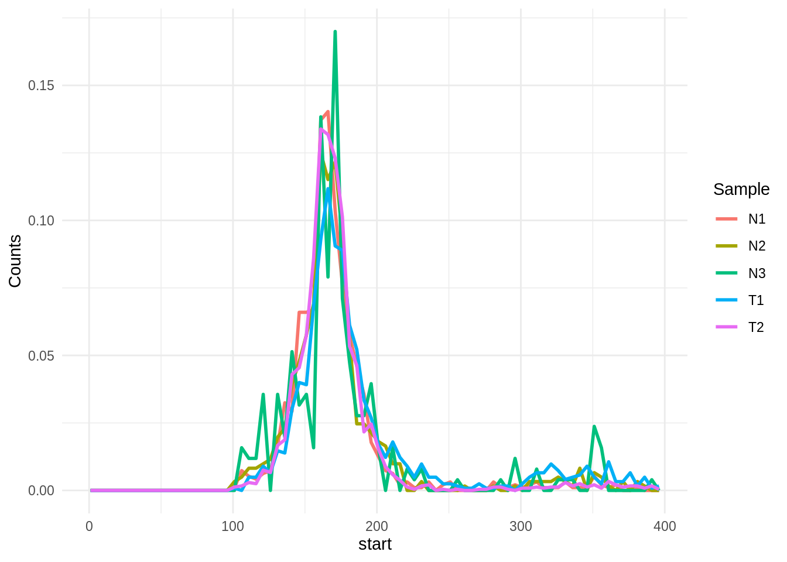
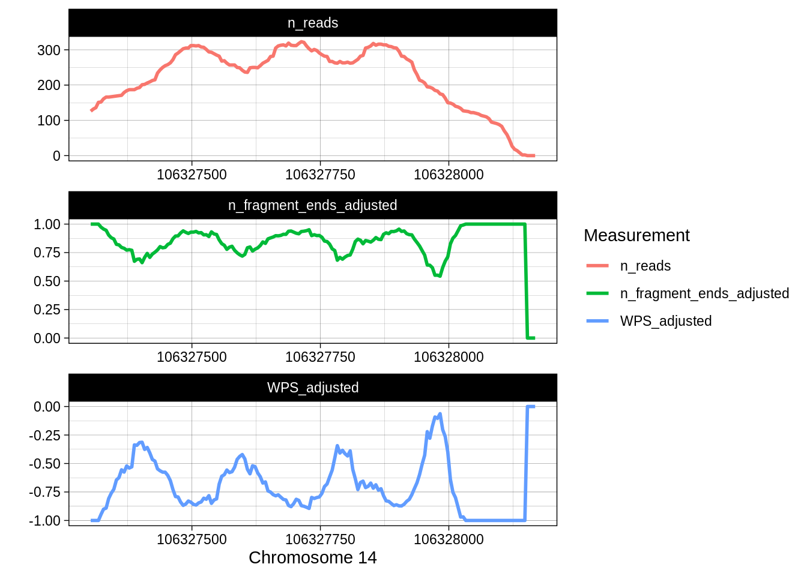

vignettes/ctDNAtools.Rmd
ctDNAtools.RmdThe ctDNAtools package is built on the Rsamtools and the GenomicAlignments R packages providing functionalities to analyze circulating tumor DNA sequencing data. In particular, the ctDNAtools can be used to:
Test minimal residual disease by tracking a set of pre-detected mutations referred to as reporter mutations in a follow-up ctDNA sample.
Analyze fragmentation patterns, histograms and profiles of cell-free DNA (cfDNA) and ctDNA.
The amount of ctDNA in plasma can drop dramatically after treatment to a level that makes genomic variants undetectable by conventional variant calling. The functionality of testing minimal residual disease (MRD) aims to track pre-detected mutations (e.g. detected in a pretreatment sample) in a follow-up sample, and determine whether the traces of these mutations can be expected by chance given the background mutation rate (ctDNA negative), or they are significantly higher than the background rate (ctDNA positive). This is implemented in the test_ctDNA() function, which uses a set of reporter mutations, a bam file of the sample to be tested, reference genome in BSgenome format, and a target file containing the sequencing targets of the panel. The output is a p-value from a Monte-Carlo sampling based test. This approach is adapted from this study (Newman et al. 2016). See method details in test_ctDNA().
library(ctDNAtools)
library(purrr)
library(tidyr)
library(dplyr)
##
## Attaching package: 'dplyr'
## The following objects are masked from 'package:stats':
##
## filter, lag
## The following objects are masked from 'package:base':
##
## intersect, setdiff, setequal, union
library(ggplot2)
## Load example data
## example list of predetected mutations
data('mutations',package = 'ctDNAtools')
mutations| CHROM | POS | REF | ALT | PHASING |
|---|---|---|---|---|
| chr14 | 106327474 | C | G | NA |
| chr14 | 106327649 | G | T | NA |
| chr14 | 106327759 | A | T | NA |
| chr14 | 106327821 | T | C | NA |
| chr14 | 106327838 | T | A | NA |
| chr14 | 106327869 | C | A | 106327869_C_A |
| chr14 | 106327884 | A | C | 106327869_C_A |
| chr14 | 106327909 | A | C | 106327869_C_A |
| chr14 | 106327929 | A | G | 106327869_C_A |
| chr14 | 106327966 | C | T | NA |
| chr | start | end |
|---|---|---|
| chr14 | 106327422 | 106328049 |
## Example bam files for middle-treatment and after-treatment
bamT1 <- system.file('extdata', 'T1.bam', package = 'ctDNAtools')
bamT2 <- system.file('extdata', 'T2.bam', package = 'ctDNAtools')
## Eample bam files from samples taken from healthy subjects
bamN1 <- system.file('extdata', 'N1.bam', package = 'ctDNAtools')
bamN2 <- system.file('extdata', 'N2.bam', package = 'ctDNAtools')
bamN3 <- system.file('extdata', 'N3.bam', package = 'ctDNAtools')
## Reference genome
suppressMessages(library(BSgenome.Hsapiens.UCSC.hg19))In the basic usage, the read counts for reference and variant alleles of the reporter mutations will be quantified, the background rate of the tested sample will be estimated, and a Monte Carlo based sampling test will determine an empirical p-value. The p-value will only be used to determine positivity if the number of informative reads (number of all unique reads covering the mutations) exceed the specified threshold. Otherwise, the sample will be considered undetermined. Note that the test only accepts single nucleotide variants, and indels are not supported.
If you have your variants in a VCF file, you can read it into a data.frame with compatible format using the vcf_to_mutations_df() function.
test1 <- test_ctDNA(mutations = mutations,
bam = bamT1,
reference = BSgenome.Hsapiens.UCSC.hg19,
targets = targets,
informative_reads_threshold = 100)
## Analyzing Sample T1 ...
## Estimating background rate ...
## Getting ref and alt Counts ...
## Running Monte Carlo simulations
## Pvalue = 9.99900009999e-05
## Sample T1 is positive
test1| sample | n_mutations | n_nonzero_alt | total_alt_reads | mutations_filtered | background_rate | informative_reads | multi_support_reads | pvalue | decision |
|---|---|---|---|---|---|---|---|---|---|
| T1 | 10 | 9 | 13 | 0 | 0.0001404 | 1327 | NA | 1e-04 | positive |
Several parameters can be adjusted including min_base_quality and min_mapq which specify which reads in the bam file to count.
test2 <- test_ctDNA(mutations = mutations,
bam = bamT2,
reference = BSgenome.Hsapiens.UCSC.hg19,
targets = targets,
informative_reads_threshold = 100,
min_base_quality = 20,
min_mapq = 30)
## Analyzing Sample T2 ...
## Estimating background rate ...
## Getting ref and alt Counts ...
## Running Monte Carlo simulations
## Pvalue = 1
## Sample T2 is negative
test2| sample | n_mutations | n_nonzero_alt | total_alt_reads | mutations_filtered | background_rate | informative_reads | multi_support_reads | pvalue | decision |
|---|---|---|---|---|---|---|---|---|---|
| T2 | 10 | 0 | 0 | 0 | 0.0001294 | 2453 | NA | 1 | negative |
## batch runs
## use future_map2_dfr for multi-threading
tests <- map2_dfr(c(bamT1, bamT2),
list(mutations, mutations), # in case mutations are different
~ test_ctDNA(bam = .x, mutations = .y,
targets = targets,
reference = BSgenome.Hsapiens.UCSC.hg19,
informative_reads_threshold = 100))
## Analyzing Sample T1 ...
## Estimating background rate ...
## Getting ref and alt Counts ...
## Running Monte Carlo simulations
## Pvalue = 9.99900009999e-05
## Sample T1 is positive
## Analyzing Sample T2 ...
## Estimating background rate ...
## Getting ref and alt Counts ...
## Running Monte Carlo simulations
## Pvalue = 1
## Sample T2 is negative
tests| sample | n_mutations | n_nonzero_alt | total_alt_reads | mutations_filtered | background_rate | informative_reads | multi_support_reads | pvalue | decision |
|---|---|---|---|---|---|---|---|---|---|
| T1 | 10 | 9 | 13 | 0 | 0.0001404 | 1327 | NA | 1e-04 | positive |
| T2 | 10 | 0 | 0 | 0 | 0.0001128 | 2413 | NA | 1e+00 | negative |
A black list of genomic loci or genomic variants can be constructed from a list of bam files corresponding to samples from healthy subjects. The black list can be plugged in the test_ctDNA() function to achieve two goals:
It will filter out variants that are likely false positives, limiting false positive ctDNA tests.
The black listed (often noisy) loci are excluded when computing the background rate, which lowers the background rate against which the observed traces of mutations are tested, and thereby enhancing sensitivity.
The ctDNAtools package provides two functions (create_background_panel() and create_black_list()) to build a black list of genomic loci (chr_pos regardless of substitutions) or variants (chr_pos_ref_alt). Both formats are recognized in test_ctDNA() and controlled by the substitution_specific parameter.
## Black list by loci (substition_specific = FALSE)
bg_panel1 <- create_background_panel(bam_list = c(bamN1, bamN2, bamN3),
targets = targets,
reference = BSgenome.Hsapiens.UCSC.hg19,
substitution_specific = FALSE)
black_list1 <- create_black_list(bg_panel1,
mean_vaf_quantile = 0.99,
min_samples_one_read = 2,
min_samples_two_reads = 1)
## 7 loci added satisfying Mean VAF condition
## 0 loci added satisfying one read condition
## 2 loci added satisfying two reads condition
## Black list has 7 loci
head(black_list1)
## [1] "chr14_106327606" "chr14_106327637" "chr14_106327641" "chr14_106327784"
## [5] "chr14_106327814" "chr14_106327923"
test3 <- test_ctDNA(mutations = mutations, bam = bamT1,
reference = BSgenome.Hsapiens.UCSC.hg19, targets = targets,
informative_reads_threshold = 100, black_list = black_list1,
substitution_specific = FALSE)
## Analyzing Sample T1 ...
## Filtering mutations ...
## Dropped 0 mutations
## Estimating background rate ...
## Getting ref and alt Counts ...
## Running Monte Carlo simulations
## Pvalue = 9.99900009999e-05
## Sample T1 is positive
test3| sample | n_mutations | n_nonzero_alt | total_alt_reads | mutations_filtered | background_rate | informative_reads | multi_support_reads | pvalue | decision |
|---|---|---|---|---|---|---|---|---|---|
| T1 | 10 | 9 | 13 | 0 | 0.0001419 | 1327 | NA | 1e-04 | positive |
## Black list by variants (substition_specific = TRUE)
bg_panel2 <- create_background_panel(bam_list = c(bamN1, bamN2, bamN3),
targets = targets,
reference = BSgenome.Hsapiens.UCSC.hg19,
substitution_specific = TRUE)
black_list2 <- create_black_list(bg_panel2,
mean_vaf_quantile = 0.99,
min_samples_one_read = 2,
min_samples_two_reads = 1)
## 19 loci added satisfying Mean VAF condition
## 0 loci added satisfying one read condition
## 2 loci added satisfying two reads condition
## Black list has 19 loci
head(black_list2)
## [1] "chr14_106327478_G_C" "chr14_106327494_A_C" "chr14_106327498_A_T"
## [4] "chr14_106327546_C_T" "chr14_106327606_C_T" "chr14_106327637_C_T"
test4 <- test_ctDNA(mutations = mutations,
bam = bamT1,
reference = BSgenome.Hsapiens.UCSC.hg19,
targets = targets,
informative_reads_threshold = 100,
black_list = black_list2,
substitution_specific = TRUE)
## Analyzing Sample T1 ...
## Filtering mutations ...
## Dropped 0 mutations
## Estimating background rate ...
## Getting ref and alt Counts ...
## Running Monte Carlo simulations
## Pvalue = 9.99900009999e-05
## Sample T1 is positive
test4| sample | n_mutations | n_nonzero_alt | total_alt_reads | mutations_filtered | background_rate | informative_reads | multi_support_reads | pvalue | decision |
|---|---|---|---|---|---|---|---|---|---|
| T1 | 10 | 9 | 13 | 0 | 0.0001321 | 1327 | NA | 1e-04 | positive |
The way how to determine the black list variants or loci is very crucial, so careful selection of the parameters in create_black_list() is needed. You can also easily design your own more sophisticated criteria to create a black list from the output of create_background_panel(), which reports the depths, variant allele frequency, and number of alternative allele reads for all loci in the targets across the input bam files.
Since create_background_panel() can take along time with a large number of bam files, multi-threading is supported. All you have to do is call plan(multiprocess) or other plan from the furrr package before calling create_background_panel().
Variants in phase (aka phased variants) are variants that are exhibited by the same sequencing reads (same allele). They are very common in some types of cancer such as lymphomas, but also can be found in other cancers. Mutect2, for example, reports phased variants in the output vcf (note that they can be collapsed into multiple-nucleotide polymorphisms - MNPs, so make sure to have your variants in un-collapsed format for this function). Phased variants can be useful in MRD because we expect that the real traces of phased variants to show in both or all mutations in phase, whereas an artifact that matches one of the mutations in phase will be only exhibited in one variant.
In the ctDNAtools package, you can supply the column name having an ID column in the mutations input, which contains a common ID for the variants in phase. When provided, the variants in phase will be collapsed and quantified jointly, reads that exhibit only one of the variants but not the others will be purified (mismatches removed), and the background rate will be adjusted according to the level of purification expected. See merge_mutations_in_phase() and test_ctDNA() for more details.
## Exploiting phased variants in the test
test5 <- test_ctDNA(mutations = mutations,
bam = bamT1,
reference = BSgenome.Hsapiens.UCSC.hg19,
targets = targets,
informative_reads_threshold = 100,
black_list = black_list2,
substitution_specific = TRUE,
ID_column = "PHASING")
## Analyzing Sample T1 ...
## Filtering mutations ...
## Dropped 0 mutations
## Estimating background rate ...
## Getting ref and alt Counts ...
## merging mutations in phase ...
## Running Monte Carlo simulations
## Pvalue = 9.99900009999e-05
## Sample T1 is positive
test5| sample | n_mutations | n_nonzero_alt | total_alt_reads | mutations_filtered | background_rate | informative_reads | multi_support_reads | pvalue | decision |
|---|---|---|---|---|---|---|---|---|---|
| T1 | 10 | 6 | 9 | 0 | 0.0001111 | 1327 | 1 | 1e-04 | positive |
Notice how using phased variants above led to significant reduction in the background rate.
The following functions are called internally by test_ctDNA(), but are available for usage if you want to build your own framework:
get_background_rate(): Computing the background rate using a bam file
merge_mutations_in_phase(): To merge phased variants in single events, purify mismatches and compute the probability of purification.
get_mutations_read_counts(): Useful for forced calling mutations.
get_mutations_read_names(): Getting the read IDs covering a list of mutations.
The fragment size distribution and fragmentation patterns of cfDNA and ctDNA is biologically relevant (see this nice review (Van Der Pol and Mouliere 2019) to learn more). The ctDNAtools package provides functionalities to analyze fragment size histograms, fragment size profiles, and fragmentation patterns.
Fragment size is extracted from the isize field in the bam file from informative reads. What makes an informative read is left to the user to customize in the available parameters. See get_fragment_size() for details.
fs1 <- get_fragment_size(bam = bamT1,
mapqFilter = 30,
isProperPair = NA,
min_size = 1,
max_size = 400,
ignore_trimmed = FALSE,
simple_cigar = FALSE,
different_strands = TRUE)
head(fs1)| Sample | ID | chr | start | end | size |
|---|---|---|---|---|---|
| T1 | T1_Library1:1956186 | chr14 | 106327322 | 106327482 | 161 |
| T1 | T1_Library1:1956188 | chr14 | 106327322 | 106327494 | 173 |
| T1 | T1_Library1:1956200 | chr14 | 106327322 | 106327557 | 236 |
| T1 | T1_Library1:1956211 | chr14 | 106327327 | 106327492 | 166 |
| T1 | T1_Library1:1956212 | chr14 | 106327327 | 106327497 | 171 |
| T1 | T1_Library1:1956221 | chr14 | 106327328 | 106327614 | 287 |
| Sample | ID | chr | start | end | size |
|---|---|---|---|---|---|
| T1 | T1_Library1:1956186 | chr14 | 106327322 | 106327482 | 161 |
| T1 | T1_Library1:1956188 | chr14 | 106327322 | 106327494 | 173 |
| T1 | T1_Library1:1956200 | chr14 | 106327322 | 106327557 | 236 |
| T1 | T1_Library1:1956211 | chr14 | 106327327 | 106327492 | 166 |
| T1 | T1_Library1:1956212 | chr14 | 106327327 | 106327497 | 171 |
| T1 | T1_Library1:1956221 | chr14 | 106327328 | 106327614 | 287 |
The start and end in the output are considered the most left and most right coordinate from either reads or mates. Note that the output will contain one row for each read pair satisfying conditions in the bam file. There is also an option to input a list of mutations together with the bam file, which leads to an additional column in the output marking the reads that support alternative alleles.
| Sample | ID | chr | start | end | size | category |
|---|---|---|---|---|---|---|
| T1 | T1_Library1:1956186 | chr14 | 106327322 | 106327482 | 161 | ref |
| T1 | T1_Library1:1956188 | chr14 | 106327322 | 106327494 | 173 | ref |
| T1 | T1_Library1:1956200 | chr14 | 106327322 | 106327557 | 236 | ref |
| T1 | T1_Library1:1956211 | chr14 | 106327327 | 106327492 | 166 | ref |
| T1 | T1_Library1:1956212 | chr14 | 106327327 | 106327497 | 171 | ref |
| T1 | T1_Library1:1956221 | chr14 | 106327328 | 106327614 | 287 | other |
Getting a histogram of the fragment size can be done with the bin_fragment_size() function. The function supports fixed bin size or custom bins, and can output the counts or normalized counts in each bin.
bfs1 <- bin_fragment_size(bam = bamT1,
min_size = 1,
max_size = 400,
normalized = TRUE,
bin_size = 5)
head(bfs1)| Breaks | T1 |
|---|---|
| 1_6 | 0 |
| 6_11 | 0 |
| 11_16 | 0 |
| 16_21 | 0 |
| 21_26 | 0 |
| 26_31 | 0 |
## batch execution
## you can use multithreading by using
## furrr::future_map instead of map
bfs <- c(bamT1, bamT2, bamN1, bamN2, bamN3) %>%
map(bin_fragment_size, bin_size = 5, normalized = TRUE) %>%
purrr::reduce(inner_join, by = "Breaks")
head(bfs)| Breaks | T1 | T2 | N1 | N2 | N3 |
|---|---|---|---|---|---|
| 1_6 | 0 | 0 | 0 | 0 | 0 |
| 6_11 | 0 | 0 | 0 | 0 | 0 |
| 11_16 | 0 | 0 | 0 | 0 | 0 |
| 16_21 | 0 | 0 | 0 | 0 | 0 |
| 21_26 | 0 | 0 | 0 | 0 | 0 |
| 26_31 | 0 | 0 | 0 | 0 | 0 |
bfs %>%
tidyr::pivot_longer(cols = -Breaks, names_to = "Sample",values_to = "Counts") %>%
tidyr::separate(Breaks, into = c("start", "end"), sep = "_", convert = T) %>%
ggplot(aes(x = start, y = Counts, color = Sample)) +
geom_line(size = 1) + theme_minimal()
## custom bins
bfs2 <- bin_fragment_size(bam = bamT1,
normalized = TRUE,
custom_bins = c(100,200),
min_size = 1,
max_size = 400)
bfs2| Breaks | T1 |
|---|---|
| 1_100 | 0.0000000 |
| 100_200 | 0.7871126 |
| 200_400 | 0.2128874 |
## restricted targets
bfs2 <- bin_fragment_size(bam = bamT1,
targets = targets,
normalized = TRUE,
custom_bins = c(100,200),
min_size = 1,
max_size = 400)
bfs2| Breaks | T1 |
|---|---|
| 1_100 | 0.0000000 |
| 100_200 | 0.7871126 |
| 200_400 | 0.2128874 |
The function summarize_fragment_size() provides the functionality to summarize the fragment size of reads in predefined genomic regions. You can use any summary function of your choosing, and several of them simultaneously.
## create some regions from the targets
regions <- data.frame(chr = targets$chr,
start = seq(from = targets$start - 50, to = targets$end + 50, by = 30),
stringsAsFactors = FALSE) %>%
mutate(end = start + 30)
sfs1 <- summarize_fragment_size(bam = bamT1,
regions = regions,
summary_functions = c(Mean = mean, SD = sd))
head(sfs1)| Region | T1_Mean | T1_SD |
|---|---|---|
| chr14:106327432-106327462 | 122.0000 | NA |
| chr14:106327462-106327492 | 150.4286 | 10.75263 |
| chr14:106327492-106327522 | 165.1000 | 13.98361 |
| chr14:106327522-106327552 | 170.9014 | 18.02629 |
| chr14:106327552-106327582 | 174.9853 | 25.08582 |
| chr14:106327582-106327612 | 174.5472 | 23.18700 |
## batch run
sfs <- c(bamT1, bamT2, bamN1, bamN2, bamN3) %>%
map(summarize_fragment_size, regions = regions, summary_functions = c(Median = median)) %>%
purrr::reduce(inner_join, by = "Region")
head(sfs)| Region | T1_Median | T2_Median | N1_Median | N2_Median | N3_Median |
|---|---|---|---|---|---|
| chr14:106327462-106327492 | 152.0 | 153.0 | 147.0 | 155 | 162 |
| chr14:106327492-106327522 | 167.0 | 162.5 | 162.0 | 165 | 151 |
| chr14:106327522-106327552 | 169.0 | 169.0 | 164.0 | 161 | 147 |
| chr14:106327552-106327582 | 170.5 | 168.0 | 168.0 | 174 | 163 |
| chr14:106327582-106327612 | 171.0 | 168.0 | 174.5 | 170 | 168 |
| chr14:106327612-106327642 | 181.0 | 173.0 | 156.0 | 167 | 117 |
Fragmentation patterns in a running genomic tiles (overlapping or non-overlapping bins) within target regions can be computed with the analyze_fragmentation() function. It will compute the number of fragment ends, the Windowed Protection Score (WPS), and the total number of fragments in each bin. WPS is defined as the number of fragments completely spanning a window (bin) minus the number of fragments with an endpoint within the same window as reported in this study (Snyder et al. 2016).
af <- analyze_fragmentation(bam = bamT1,
targets = targets,
window_size = 120,
step_size = 5,
min_size = 120,
max_size = 180)
head(af)| chr | start | end | WPS | WPS_adjusted | n_fragment_ends | n_fragment_ends_adjusted | n_reads |
|---|---|---|---|---|---|---|---|
| chr14 | 106327303 | 106327423 | -126 | -1.0000000 | 126 | 1.0000000 | 126 |
| chr14 | 106327308 | 106327428 | -132 | -1.0000000 | 132 | 1.0000000 | 132 |
| chr14 | 106327313 | 106327433 | -136 | -1.0000000 | 136 | 1.0000000 | 136 |
| chr14 | 106327318 | 106327438 | -151 | -1.0000000 | 151 | 1.0000000 | 151 |
| chr14 | 106327323 | 106327443 | -144 | -0.9473684 | 148 | 0.9736842 | 152 |
| chr14 | 106327328 | 106327448 | -145 | -0.9006211 | 154 | 0.9565217 | 161 |
af %>% tidyr::pivot_longer(
cols = c("WPS_adjusted", "n_fragment_ends_adjusted","n_reads"),
names_to = "Measurement",
values_to = "value") %>%
mutate(Measurement = factor(Measurement,
levels = c("n_reads", "n_fragment_ends_adjusted", "WPS_adjusted"))) %>%
ggplot(aes(x = start, y = value, color = Measurement)) +
geom_line(size = 1) +
facet_wrap(~Measurement, scales = "free", nrow = 3) +
theme_linedraw() +
labs(x = "Chromosome 14", y = "")
Newman, Aaron M, Alexander F Lovejoy, Daniel M Klass, David M Kurtz, Jacob J Chabon, Florian Scherer, Henning Stehr, et al. 2016. “Integrated Digital Error Suppression for Improved Detection of Circulating Tumor DNA.” Nature Biotechnology 34 (5). Nature Publishing Group: 547.
Snyder, Matthew W, Martin Kircher, Andrew J Hill, Riza M Daza, and Jay Shendure. 2016. “Cell-Free DNA Comprises an in Vivo Nucleosome Footprint That Informs Its Tissues-of-Origin.” Cell 164 (1-2). Elsevier: 57–68.
Van Der Pol, Ymke, and Florent Mouliere. 2019. “Toward the Early Detection of Cancer by Decoding the Epigenetic and Environmental Fingerprints of Cell-Free DNA.” Cancer Cell 36 (4). Elsevier: 350–68.